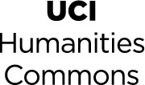

Markdown and GitHub: First Steps Toward learning Modern Digital Practices for Sustainable and Shareable Research.
Friday, April 13, 2018
Time: 12:00-3:00 pm
Location: UC Irvine Humanities Hall 251
Lunch will be provided
Slideshow Links Sandbox Live Stream
Topic modeling is a computational method of exploring what is sometimes described as &ldoquo;hidden” thematic or semantic structures in collections of texts. It is used by Digital Humanities researchers to explore textual data at scale and to offer a different perspective on data from which to gain new insights about the materials they are studying. This workshop will introduce the principles of topic modeling, along with the tools used for topic model construction in the Humanities and Humanities-inflected disciplines. Discussion will include the interpretation of topic models and the tools being created by the Mellon-funded WhatEvery1Says project to make topic modeling workflows more accessible to scholars and students in the Humanities.
The workshop will last two hours, and there will be a third hour for those who wish to gain some hands-on experience in implementing topic models with their data. The workshop is geared for beginners, including students and faculty. No prior knowledge is assumed or required, but it is recommended that those who stay for the third hour bring along a laptop and, optionally, their own digital collections (some test collections will also be available).
Scott Kleinman, one of the WhatEvery1Says project's PIs, will lead the workshop. A professor of English at California State University, Northridge, Kleinman is also project lead for the Lexomics project, which produces the online text-analysis tool Lexos.
The workshop is geared for beginners, including students and faculty. It will also serve the purpose of helping to train some of WE1S's research assistants in methods used by the project.

This workshop is generously sponsored by the UC Irvine Humanities Commons.
Brain image courtesy of Alan Liu. Image source: Medical News Today.
This section is still under construction. Please check back later for improvements to the links.
Markdown and GitHub: First Steps Toward learning Modern Digital Practices for Sustainable and Shareable Research.
Contact the WE1S Project at